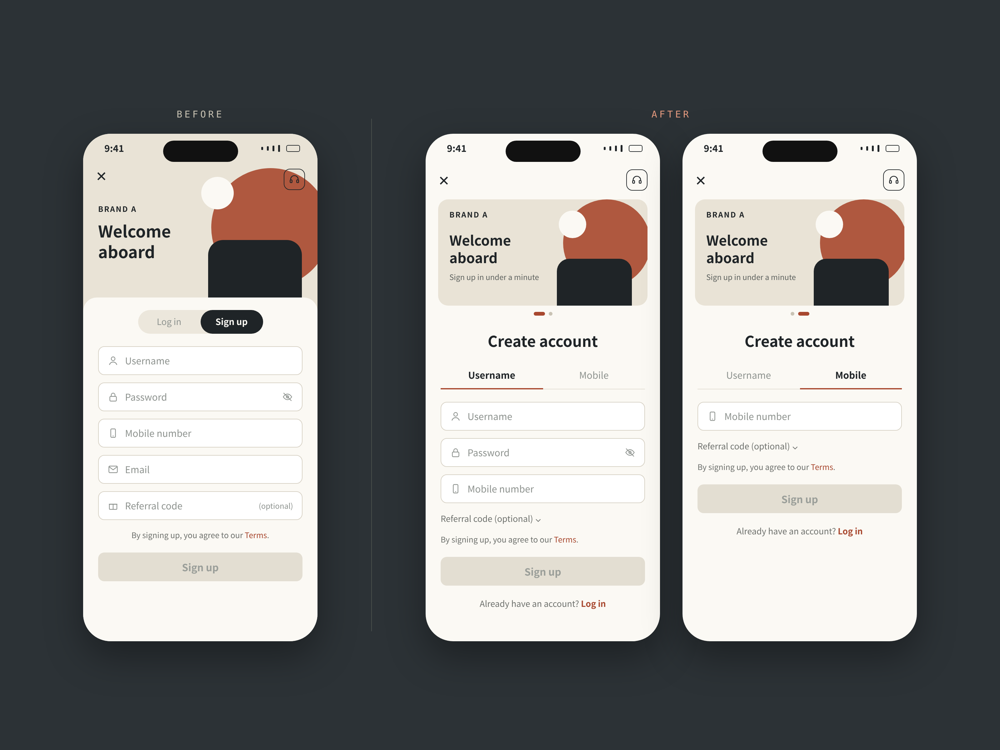
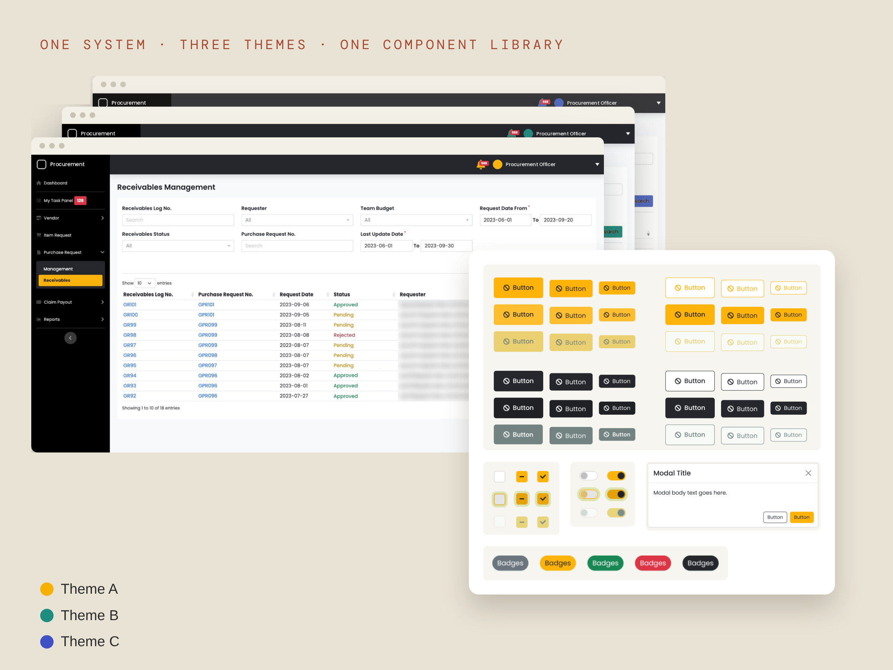
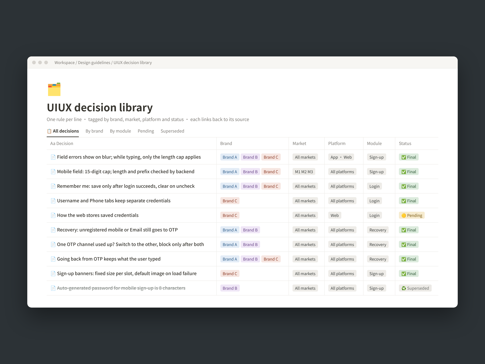
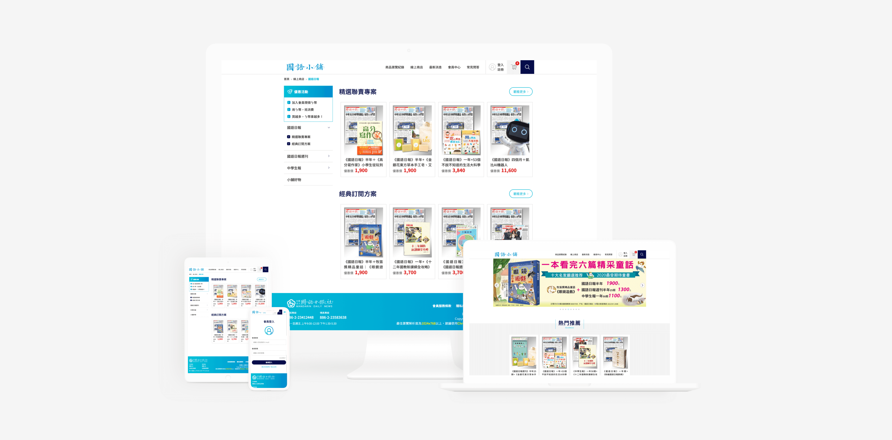
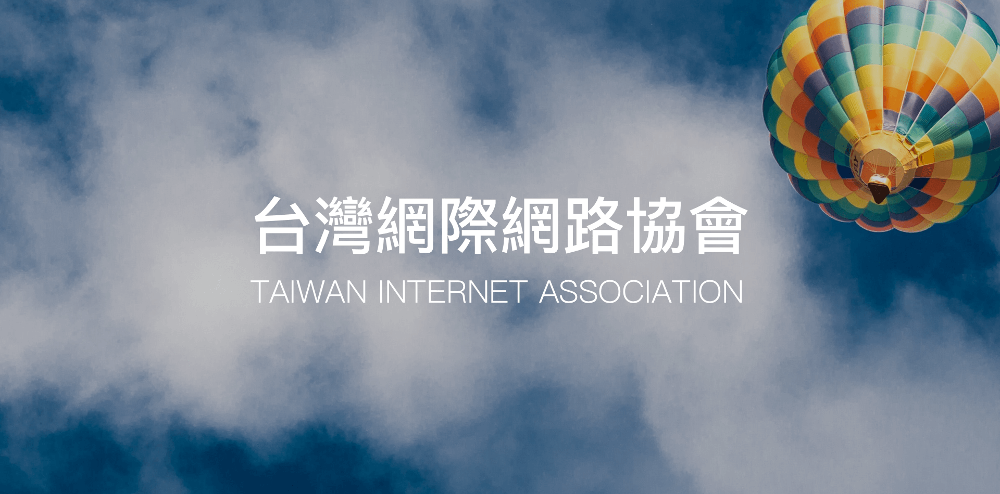
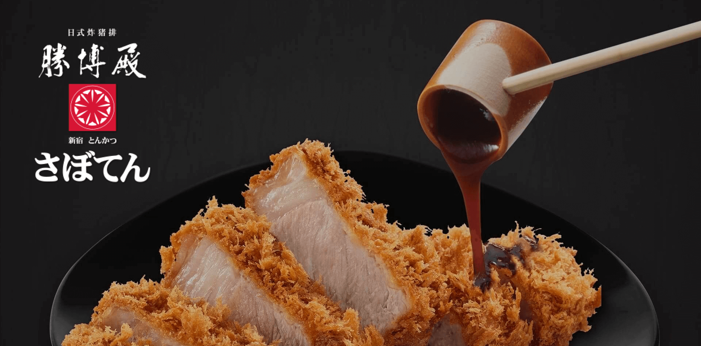

註冊・登入流程健檢
適合：註冊轉換不理想、客服常收到「登不進去」「收不到驗證碼」的團隊。
交付內容- 實際走一遍現有流程，整理問題清單與優先順序
- 例外情境盤點：重複註冊、錯誤訊息、帳號被鎖、找回失敗
- 改善建議與 mockup，兼顧好用與資安
做過的事：三品牌註冊改版，註冊送出日均 +18.6% 看案例 →
Services|
每一項都可以單獨接，也可以組合。範圍不確定也沒關係，先聊再一起決定。
適合：註冊轉換不理想、客服常收到「登不進去」「收不到驗證碼」的團隊。
交付內容做過的事：三品牌註冊改版，註冊送出日均 +18.6% 看案例 →
適合：準備上線，但團隊裡沒有專職設計師幫忙驗收畫面的團隊。
交付內容做過的事：一次改版的 UAT 開出 115 張問題單 看案例 →
適合：需要官網、品牌網站、活動頁或會員功能的店家與中小企業。
交付內容做過的事：30+ 個 RWD 網站上線，包含國語日報、台灣網際網路協會 看作品 →
適合：規格散在聊天紀錄和文件裡，同一個問題一直被重複問的小團隊。
交付內容做過的事：自建 UIUX 決策庫，找規則從翻聊天紀錄變成一搜就有 看案例 →
Selected work|
所有畫面皆已去識別化。每個案例都有完整版，想看細節可以點進去。

註冊送出日均 +18.6%，每人重複送出 −19%。

三家公司都已上線使用，design system 交付公司與工程師。

一搜就找到規則和出處，還抓到工程師打錯的文案。
Client projects|

2019｜RWD 網站・會員系統國語日報・國語小舖 訂閱網站

2019｜RWD 網站改版台灣網際網路協會 官網改版

2018｜App 設計勝博殿 Saboten 餐飲 App 改版
Process|
私訊或來信，簡單說明產品、想解決的問題和預計時程。還沒想清楚也沒關係，我們可以一起整理。
確認交付內容、修改次數和時程後提供報價，雙方同意再開始。
過程中分段給你看、隨時調整方向，不會等到最後才一次交出來。
交付設計檔與規格說明，讓工程師看得懂。上線前也可以協助確認畫面。
FAQ|
依案子範圍報價。看過需求後，我會列出交付內容、修改次數和時程，讓你清楚知道費用包含哪些項目。
可以。例如只做一次註冊流程健檢，或只在上線前幫忙驗收畫面，都可以單獨接。
線上合作就可以完成，人在台北的話也可以約面談。
可以。我習慣中英雙語寫規格和問題單，日文為 JLPT N2。
Contact|
接案合作歡迎私訊或來信，說明產品和想解決的問題就可以。
FREELANCE · TAIPEI · OPEN TO REMOTE (GMT+8)
Ten years in design and 30+ responsive websites shipped. Lately I focus on sign-up and login flows, and on quality checks before launch. If your team needs a design partner who thinks flows through and can talk shop with engineers, let's talk.
Services|
Each service works on its own or combined with others. Not sure about the scope yet? We can talk it through and decide together.
For teams with weak sign-up conversion, or whose support keeps hearing “I can't log in” and “I never got the code.”
DELIVERABLESDone before: a three-brand sign-up redesign, with daily sign-up submits up 18.6% See the case →
For teams about to launch without a dedicated designer to check the screens.
DELIVERABLESDone before: 115 issue tickets filed during one redesign's UAT See the case →
For shops and small businesses that need a company site, a brand site, a campaign page or membership features.
DELIVERABLESDone before: 30+ responsive websites launched, including Mandarin Daily News and the Taiwan Internet Association See the work →
For small teams whose specs are scattered across chats and documents, and who keep answering the same questions.
DELIVERABLESDone before: built my own UI/UX decision library, so finding a rule went from digging through chat to one search See the case →
Selected work|
All screens are de-identified. Each case has a full write-up if you want the details.
Daily sign-up submits +18.6%, repeat submits per user −19%.
Live at all three companies; the design system was handed over to the company and its engineers.
Rules and their sources are one search away, and it even caught copy an engineer had mistyped.
Client projects|
Mandarin Daily News subscription shop
Taiwan Internet Association website
Saboten restaurant app redesign
Process|
Message or email me with a short note on your product, the problem you want solved and your timeline. If it isn't clear yet, we can sort it out together.
Once we agree on deliverables, revision rounds and timeline, I send a quote, and we start when both sides are happy.
You see the work in stages and we adjust the direction as we go, instead of one big reveal at the end.
I hand over design files and specs that engineers can follow, and can help check the screens before launch.
FAQ|
By scope. After reviewing your needs, I list the deliverables, revision rounds and timeline, so you know exactly what the fee covers.
Yes. A one-off sign-up flow review, or only checking screens before launch, can each be booked on its own.
Everything can be done online. If you're in Taipei, we can also meet in person.
Yes. I'm used to writing specs and issue tickets in both Chinese and English, and my Japanese is JLPT N2.
Contact|
For freelance work, message or email me with a note on your product and the problem you want solved.